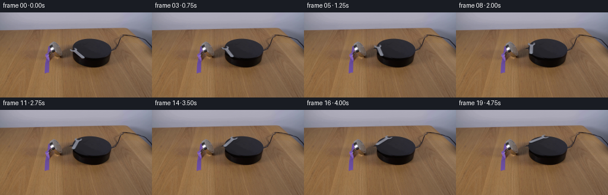
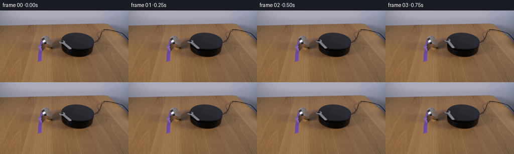
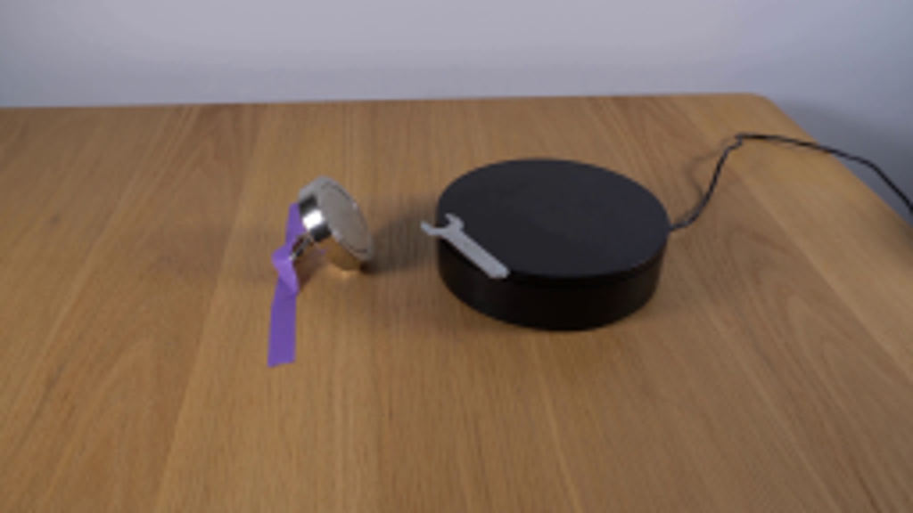
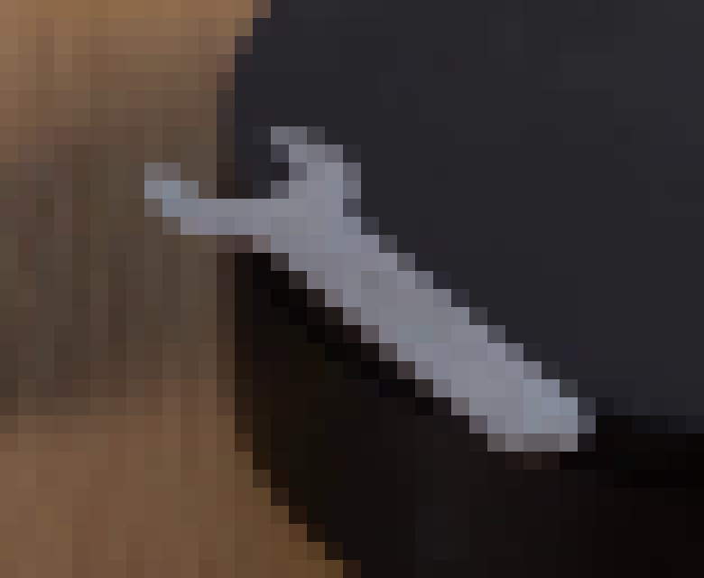
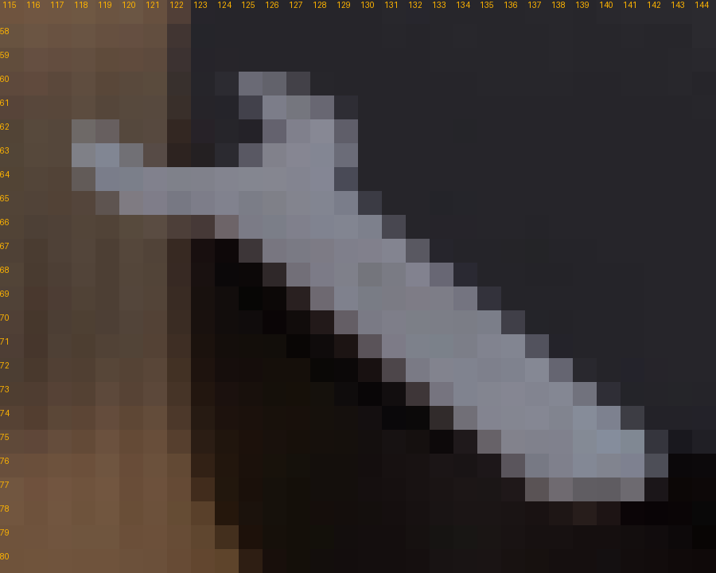
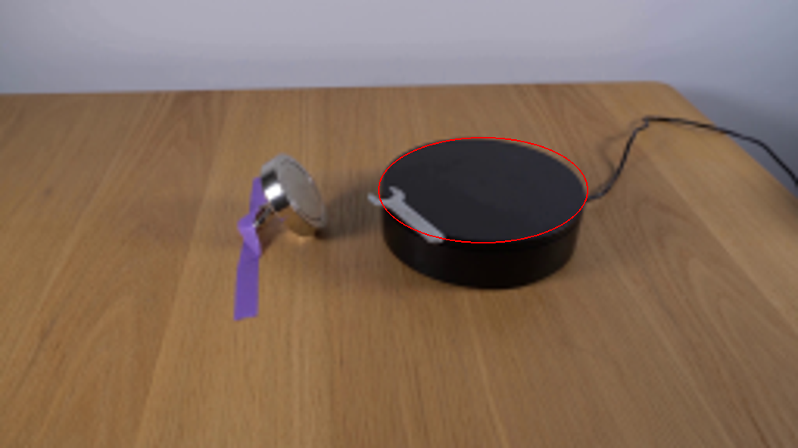
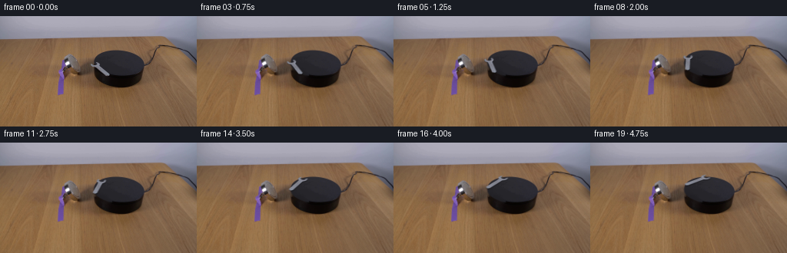
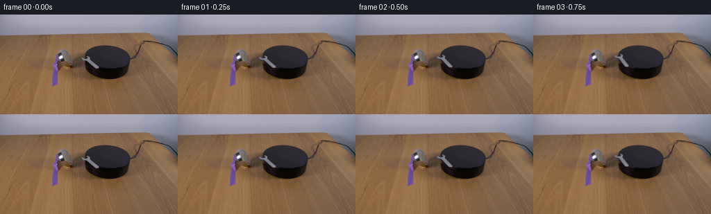
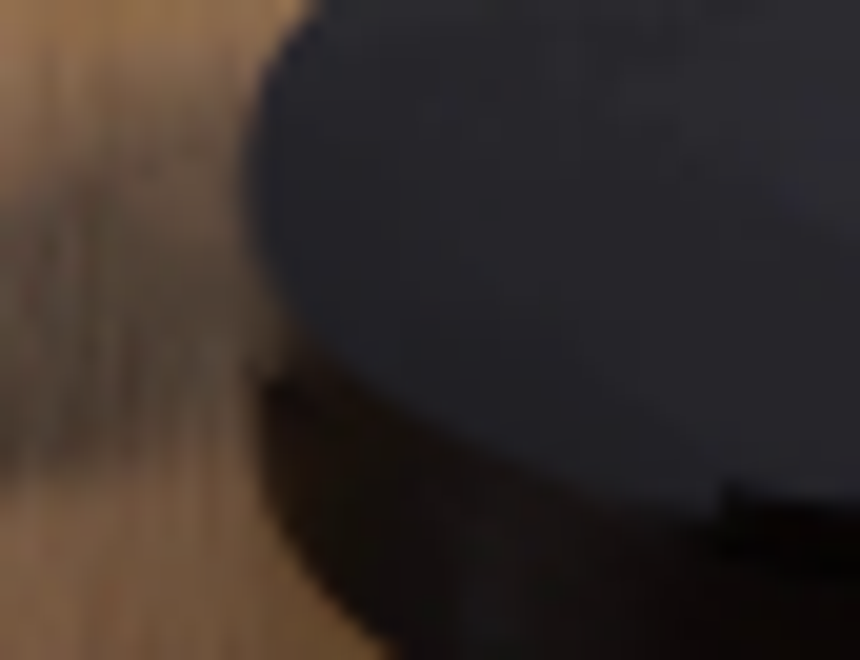
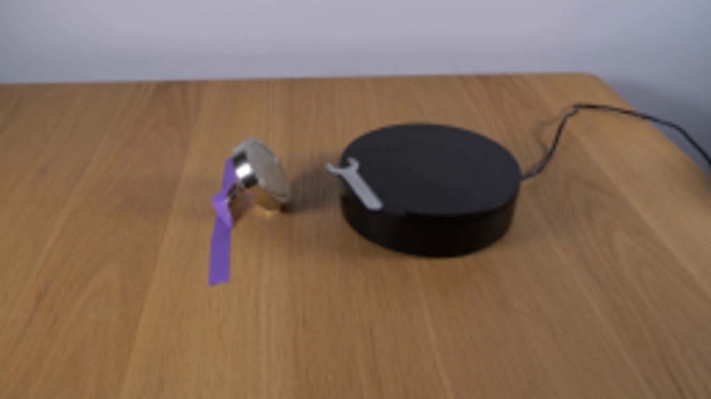

CODING AGENTS AS PIXEL WORLD MODELS
traex/GPT-6.1-Sol · 0101
点击播放 · 原生 RGB 像素
逐轮保存的候选
回放视频、检查图与代码变化。
每份候选均可单独播放。实际图片检查记录在下方工具轨迹中。
候选 01播放与检查图
点击播放 · 原生 RGB 像素

展开代码变化
--- 上一保存版本
+++ 本次保存版本
@@ -0,0 +1,101 @@
+from pathlib import Path
+import numpy as np
+from PIL import Image, ImageDraw, ImageFilter
+import cv2
+from scipy.ndimage import gaussian_filter, map_coordinates
+import artifact_io
+
+ROOT=Path(__file__).resolve().parent
+H,W=144,256
+S=4
+original=np.asarray(Image.open(ROOT/'first_frame.png').convert('RGB'))
+
+# The silhouette and texture of the original steel spanner.
+outline=[(124.65,59.85),(126.65,60.05),(128.9,61.55),(129.1,63.0),
+ (128.8,64.7),(130.4,65.7),(132.2,67.05),(136.2,70.15),(140.8,73.75),
+ (142.5,75.05),(142.65,76.55),(141.9,77.15),(139.55,77.45),
+ (138.05,77.05),(135.7,75.0),(131.5,71.9),(127.0,68.1),(124.15,66.15),
+ (120.45,65.7),(118.65,64.85),(117.65,63.8),(117.75,62.6),
+ (118.6,62.55),(119.6,63.45),(120.7,63.85),(123.0,64.0),
+ (125.0,63.65),(126.45,62.75),(126.3,62.25),(124.65,60.95)]
+aimg=Image.new('L',(W*S,H*S));ImageDraw.Draw(aimg).polygon([(x*S,y*S) for x,y in outline],fill=255)
+aimg=aimg.filter(ImageFilter.GaussianBlur(.35*S))
+alpha=np.asarray(aimg.resize((W,H),Image.Resampling.LANCZOS)).astype(float)/255
+
+# Removal of the spanner restores the uninterrupted matte platform and table.
+rem=np.zeros((H,W),np.uint8)
+# Include the contact shadow at the near rim.
+cv2.fillPoly(rem,[np.array([(116,61),(124,58),(131,60),(132,64),(145,75),
+ (145,80),(138,80),(122,69),(116,67)],np.int32)],255)
+base=cv2.inpaint(original,rem,3,cv2.INPAINT_TELEA).astype(float)
+y,x=np.mgrid[:H,:W]
+# The black top is a projected circular plane.
+cx,cy=155.05,61.15
+rx,ry=33.45,16.85
+theta=np.deg2rad(.7)
+xx=(x-cx)*np.cos(theta)+(y-cy)*np.sin(theta)
+yy=-(x-cx)*np.sin(theta)+(y-cy)*np.cos(theta)
+r2=(xx/rx)**2+(yy/ry)**2
+# Recover subtle low-frequency illumination of that surface from its visible part.
+visible=(r2<.82)&(rem==0)
+F=np.stack([np.ones_like(x),x-cx,y-cy,(x-cx)**2,(y-cy)**2,(x-cx)*(y-cy)],axis=-1)
+coef=np.linalg.lstsq(F[visible],original[visible].astype(float),rcond=None)[0]
+top=np.einsum('hwk,kc->hwc',F,coef)
+# Small original surface variations; no scene-wide pixel motion.
+noise=original.astype(float)-np.einsum('hwk,kc->hwc',F,coef)
+noise=cv2.GaussianBlur(noise,(3,3),.55)
+for py in range(58,80):
+ for px in range(115,148):
+ if rem[py,px] and r2[py,px]<1:
+ # Use neighboring grain on the same top face.
+ qx=160+(px%13)
+ top[py,px]+=noise[min(py,73),qx]*.45
+edge=np.clip((1-r2)*8+.5,0,1)
+blend=(rem.astype(float)/255)*edge
+base=base*(1-blend[...,None])+top*blend[...,None]
+base=np.clip(base,0,255)
+
+# Reconstruct metal colors independently of the background under antialiased edges.
+# The steel's visible variation is retained, with neutral edge interpolation.
+steel=np.array([129.,132.,143.])
+foreground=np.empty_like(base)
+a=alpha[...,None]
+raw=(original.astype(float)-(1-a)*base)/np.maximum(a,.01)
+conf=np.clip((alpha-.38)/.45,0,1)[...,None]
+foreground=steel*(1-conf)+np.clip(raw,[92,94,101],[167,170,181])*conf
+foreground=np.clip(foreground,0,255)
+
+# A continuous projected clockwise rotation on the circular black platform.
+# Source pixels are lifted into the plane of the tabletop and reprojected.
+hi_bg=cv2.resize(base,(W*S,H*S),interpolation=cv2.INTER_CUBIC)
+hi_alpha=np.asarray(aimg).astype(float)/255
+hi_fg=cv2.resize(foreground,(W*S,H*S),interpolation=cv2.INTER_CUBIC)
+premul=hi_fg*hi_alpha[...,None]
+
+frames=[original.copy()]
+for i in range(1,20):
+ t=i/4
+ # Gentle turn at a steady laboratory-demonstration speed after startup.
+ angle=np.deg2rad(19.0*(t-.18*(1-np.exp(-t/.18))))
+ c,s=np.cos(angle),np.sin(angle)
+ foreshorten=.515
+ A=np.array([[c,-s/foreshorten],[s*foreshorten,c]])
+ pivot=np.array([cx,cy])
+ offset=pivot-A@pivot
+ M=np.column_stack((A,offset*S))
+ moved_a=cv2.warpAffine(hi_alpha,M,(W*S,H*S),flags=cv2.INTER_LINEAR)
+ moved_rgb=cv2.warpAffine(premul,M,(W*S,H*S),flags=cv2.INTER_LINEAR)
+ # Submillimeter elevation and a restrained contact shadow beneath the steel.
+ shift=np.array([[1,0,.20*S],[0,1,.90*S]],np.float32)
+ sh=cv2.warpAffine(moved_a,shift,(W*S,H*S),flags=cv2.INTER_LINEAR)
+ sh=cv2.GaussianBlur(sh,(0,0),.40*S)*.45
+ # Very subtle directional reflection changes on the steel.
+ gain=1+.032*np.sin(angle)
+ out=hi_bg*(1-sh[...,None])
+ out=out*(1-moved_a[...,None])+moved_rgb*gain
+ out=cv2.resize(out,(W,H),interpolation=cv2.INTER_AREA)
+ frames.append(np.clip(np.rint(out),0,255).astype(np.uint8))
+frames=np.stack(frames)
+artifact_io.save(frames,ROOT)
+Image.fromarray(np.uint8(np.clip(base,0,255))).save(ROOT/'.tmp/clean.png')
+Image.fromarray(np.uint8(alpha*255)).save(ROOT/'.tmp/alpha.png')
候选 02播放与检查图
点击播放 · 原生 RGB 像素


展开代码变化
--- 上一保存版本
+++ 本次保存版本
@@ -26,7 +26,7 @@
rem=np.zeros((H,W),np.uint8)
# Include the contact shadow at the near rim.
cv2.fillPoly(rem,[np.array([(116,61),(124,58),(131,60),(132,64),(145,75),
- (145,80),(138,80),(122,69),(116,67)],np.int32)],255)
+ (151,80),(138,80),(122,69),(116,67)],np.int32)],255)
base=cv2.inpaint(original,rem,3,cv2.INPAINT_TELEA).astype(float)
y,x=np.mgrid[:H,:W]
# The black top is a projected circular plane.
@@ -50,7 +50,18 @@
# Use neighboring grain on the same top face.
qx=160+(px%13)
top[py,px]+=noise[min(py,73),qx]*.45
-edge=np.clip((1-r2)*8+.5,0,1)
+# The restored near lip uses the same thin rounded rim as the visible half.
+rim=cy+16.0*np.sqrt(np.maximum(0,1-((x-cx)/rx)**2))
+edge=np.clip((rim-y)/.85+.5,0,1)
+# A nearby part of the cylinder supplies its original dark side at the same
+# distance below the top edge, avoiding a lingering wrench-shaped shadow.
+for py in range(66,81):
+ for px in range(123,152):
+ if rem[py,px] and py>rim[py,px]-.7:
+ d=py-rim[py,px]
+ source_y=cy+16.0+d
+ side=np.array([np.interp(source_y,np.arange(H),original[:,155,k]) for k in range(3)])
+ base[py,px]=side
blend=(rem.astype(float)/255)*edge
base=base*(1-blend[...,None])+top*blend[...,None]
base=np.clip(base,0,255)
@@ -94,6 +105,9 @@
out=hi_bg*(1-sh[...,None])
out=out*(1-moved_a[...,None])+moved_rgb*gain
out=cv2.resize(out,(W,H),interpolation=cv2.INTER_AREA)
+ footprint=cv2.resize(moved_a+sh,(W,H),interpolation=cv2.INTER_AREA)>1e-5
+ edited=(rem>0)|footprint
+ out[~edited]=original[~edited]
frames.append(np.clip(np.rint(out),0,255).astype(np.uint8))
frames=np.stack(frames)
artifact_io.save(frames,ROOT)
可观测工具轨迹
实际执行的命令与返回图片。
命令 1exit 0
/bin/bash -lc "cat prompt.txt && printf '\\n---RULES---\\n' && cat GENERATION_RULES.md && printf '\\n---FILES---\\n' && ls -la"
命令 2exit 0
/bin/bash -lc "cat artifact_io.py && python - <<'PY'
from PIL import Image
im=Image.open('first_frame.png');im.resize((1024,576)).save('.tmp/enlarged.png')
PY"命令 3exit 0
/bin/bash -lc "python - <<'PY'
from PIL import Image
im=Image.open('first_frame.png'); im.crop((110,53,149,85)).resize((780,640),Image.Resampling.NEAREST).save('.tmp/wrench_pixels.png')
PY"命令 4exit 0
/bin/bash -lc "python - <<'PY'
import cv2, scipy, numpy
from PIL import Image,ImageDraw
im=Image.open('first_frame.png').crop((115,57,145,81)).resize((900,720),Image.Resampling.NEAREST)
d=ImageDraw.Draw(im)
for x in range(30):
d.text((x*30+3,0),str(x+115),fill=(255,180,0))
for y in range(1,24):
d.text((0,y*30+3),str(y+57),fill=(255,180,0))
im.save('.tmp/grid.png')
PY"命令 5exit 0
/bin/bash -lc "python - <<'PY'
from PIL import Image,ImageDraw
im=Image.open('first_frame.png').resize((1024,576));d=ImageDraw.Draw(im)
d.ellipse((121.4*4,44.0*4,188.7*4,78.0*4),outline='red',width=2)
im.save('.tmp/ellipse.png')
import numpy as np
I=np.asarray(Image.open('first_frame.png'))
for y in range(59,80):
print(y,' '.join('%3d'%v for v in I[y,116:147,0]))
PY"命令 6exit 0
/bin/bash -lc "cat > generate.py <<'PY'
from pathlib import Path
import numpy as np
from PIL import Image, ImageDraw, ImageFilter
import cv2
from scipy.ndimage import gaussian_filter, map_coordinates
import artifact_io
ROOT=Path(__file__).resolve().parent
H,W=144,256
S=4
original=np.asarray(Image.open(ROOT/'first_frame.png').convert('RGB'))
# The silhouette and texture of the original steel spanner.
outline=[(124.65,59.85),(126.65,60.05),(128.9,61.55),(129.1,63.0),
(128.8,64.7),(130.4,65.7),(132.2,67.05),(136.2,70.15),(140.8,73.75),
(142.5,75.05),(142.65,76.55),(141.9,77.15),(139.55,77.45),
(138.05,77.05),(135.7,75.0),(131.5,71.9),(127.0,68.1),(124.15,66.15),
(120.45,65.7),(118.65,64.85),(117.65,63.8),(117.75,62.6),
(118.6,62.55),(119.6,63.45),(120.7,63.85),(123.0,64.0),
(125.0,63.65),(126.45,62.75),(126.3,62.25),(124.65,60.95)]
aimg=Image.new('L',(W*S,H*S));ImageDraw.Draw(aimg).polygon([(x*S,y*S) for x,y in outline],fill=255)
aimg=aimg.filter(ImageFilter.GaussianBlur(.35*S))
alpha=np.asarray(aimg.resize((W,H),Image.Resampling.LANCZOS)).astype(float)/255
# Removal of the spanner restores the uninterrupted matte platform and table.
rem=np.zeros((H,W),np.uint8)
# Include the contact shadow at the near rim.
cv2.fillPoly(rem,[np.array([(116,61),(124,58),(131,60),(132,64),(145,75),
(145,80),(138,80),(122,69),(116,67)],np.int32)],255)
base=cv2.inpaint(original,rem,3,cv2.INPAINT_TELEA).astype(float)
y,x=np.mgrid[:H,:W]
# The black top is a projected circular plane.
cx,cy=155.05,61.15
rx,ry=33.45,16.85
theta=np.deg2rad(.7)
xx=(x-cx)*np.cos(theta)+(y-cy)*np.sin(theta)
yy=-(x-cx)*np.sin(theta)+(y-cy)*np.cos(theta)
r2=(xx/rx)**2+(yy/ry)**2
# Recover subtle low-frequency illumination of that surface from its visible part.
visible=(r2<.82)&(rem==0)
F=np.stack([np.ones_like(x),x-cx,y-cy,(x-cx)**2,(y-cy)**2,(x-cx)*(y-cy)],axis=-1)
coef=np.linalg.lstsq(F[visible],original[visible].astype(float),rcond=None)[0]
top=np.einsum('hwk,kc->hwc',F,coef)
# Small original surface variations; no scene-wide pixel motion.
noise=original.astype(float)-np.einsum('hwk,kc->hwc',F,coef)
noise=cv2.GaussianBlur(noise,(3,3),.55)
for py in range(58,80):
for px in range(115,148):
if rem[py,px] and r2[py,px]<1:
# Use neighboring grain on the same top face.
qx=160+(px%13)
top[py,px]+=noise[min(py,73),qx]*.45
edge=np.clip((1-r2)*8+.5,0,1)
blend=(rem.astype(float)/255)*edge
base=base*(1-blend[...,None])+top*blend[...,None]
base=np.clip(base,0,255)
# Reconstruct metal colors independently of the background under antialiased edges.
# The steel's visible variation is retained, with neutral edge interpolation.
steel=np.array([129.,132.,143.])
foreground=np.empty_like(base)
a=alpha[...,None]
raw=(original.astype(float)-(1-a)*base)/np.maximum(a,.01)
conf=np.clip((alpha-.38)/.45,0,1)[...,None]
foreground=steel*(1-conf)+np.clip(raw,[92,94,101],[167,170,181])*conf
foreground=np.clip(foreground,0,255)
# A continuous projected clockwise rotation on the circular black platform.
# Source pixels are lifted into the plane of the tabletop and reprojected.
hi_bg=cv2.resize(base,(W*S,H*S),interpolation=cv2.INTER_CUBIC)
hi_alpha=np.asarray(aimg).astype(float)/255
hi_fg=cv2.resize(foreground,(W*S,H*S),interpolation=cv2.INTER_CUBIC)
premul=hi_fg*hi_alpha[...,None]
frames=[original.copy()]
for i in range(1,20):
t=i/4
# Gentle turn at a steady laboratory-demonstration speed after startup.
angle=np.deg2rad(19.0*(t-.18*(1-np.exp(-t/.18))))
c,s=np.cos(angle),np.sin(angle)
foreshorten=.515
A=np.array([[c,-s/foreshorten],[s*foreshorten,c]])
pivot=np.array([cx,cy])
offset=pivot-A@pivot
M=np.column_stack((A,offset*S))
moved_a=cv2.warpAffine(hi_alpha,M,(W*S,H*S),flags=cv2.INTER_LINEAR)
moved_rgb=cv2.warpAffine(premul,M,(W*S,H*S),flags=cv2.INTER_LINEAR)
# Submillimeter elevation and a restrained contact shadow beneath the steel.
shift=np.array([[1,0,.20*S],[0,1,.90*S]],np.float32)
sh=cv2.warpAffine(moved_a,shift,(W*S,H*S),flags=cv2.INTER_LINEAR)
sh=cv2.GaussianBlur(sh,(0,0),.40*S)*.45
# Very subtle directional reflection changes on the steel.
gain=1+.032*np.sin(angle)
out=hi_bg*(1-sh[...,None])
out=out*(1-moved_a[...,None])+moved_rgb*gain
out=cv2.resize(out,(W,H),interpolation=cv2.INTER_AREA)
frames.append(np.clip(np.rint(out),0,255).astype(np.uint8))
frames=np.stack(frames)
artifact_io.save(frames,ROOT)
Image.fromarray(np.uint8(np.clip(base,0,255))).save(ROOT/'.tmp/clean.png')
Image.fromarray(np.uint8(alpha*255)).save(ROOT/'.tmp/alpha.png')
PY
python generate.py"命令 7exit 0
/bin/bash -lc "python - <<'PY'
from PIL import Image
im=Image.open('.tmp/clean.png');im.crop((110,52,153,85)).resize((860,660)).save('.tmp/cleanzoom.png')
im=Image.open('frames/03.png');im.resize((1024,576)).save('.tmp/framezoom.png')
PY"命令 8exit 0
/bin/bash -lc "python - <<'PY'
from PIL import Image
im=Image.open('first_frame.png'); im.crop((137,72,156,85)).resize((760,520),Image.Resampling.NEAREST).save('.tmp/rim.png')
PY"命令 9exit 0
/bin/bash -lc "python - <<'PY'
import numpy as np
from PIL import Image
I=np.asarray(Image.open('first_frame.png'))
for y in range(71,82):print(y,' '.join('%3d'%v for v in I[y,141:170,0]))
PY"命令 10exit 0
/bin/bash -lc "python - <<'PY'
p='generate.py'
s=open(p).read().replace('(145,80),(138,80),(122,69),(116,67)', '(151,80),(138,80),(122,69),(116,67)')
s=s.replace('edge=np.clip((1-r2)*8+.5,0,1)\\nblend=', '''# The restored near lip uses the same thin rounded rim as the visible half.
rim=cy+16.0*np.sqrt(np.maximum(0,1-((x-cx)/rx)**2))
edge=np.clip((rim-y)/.85+.5,0,1)
# A nearby part of the cylinder supplies its original dark side at the same
# distance below the top edge, avoiding a lingering wrench-shaped shadow.
for py in range(66,81):
for px in range(123,152):
if rem[py,px] and py>rim[py,px]-.7:
d=py-rim[py,px]
source_y=cy+16.0+d
side=np.array([np.interp(source_y,np.arange(H),original[:,155,k]) for k in range(3)])
base[py,px]=side
blend=''')
# preserve pixels outside restoration rather than resampling the whole scene
s=s.replace('out=cv2.resize(out,(W,H),interpolation=cv2.INTER_AREA)\\n frames.append', '''out=cv2.resize(out,(W,H),interpolation=cv2.INTER_AREA)
footprint=cv2.resize(moved_a+sh,(W,H),interpolation=cv2.INTER_AREA)>1e-5
edited=(rem>0)|footprint
out[~edited]=original[~edited]
frames.append''')
open(p,'w').write(s)
PY
python generate.py
python - <<'PY'
from PIL import Image
Image.open('frames/03.png').resize((1024,576)).save('.tmp/framezoom.png')
PY"命令 11exit 0
/bin/bash -lc "python - <<'PY'
from PIL import Image
import numpy as np
p=np.load('pixels.npz')['pixels']
a=np.asarray(Image.open('first_frame.png').convert('RGB'))
f=np.asarray(Image.open('frames/00.png').convert('RGB'))
assert np.array_equal(a,f)
assert p.shape==(144,256,20)
print('Verified 20 RGB frames, 256Ã144; first frame exactly preserved.')
PY"视觉工具实际返回图片 1

视觉工具实际返回图片 2

视觉工具实际返回图片 3

视觉工具实际返回图片 4

视觉工具实际返回图片 5

视觉工具实际返回图片 6

视觉工具实际返回图片 7

视觉工具实际返回图片 8

视觉工具实际返回图片 9
视觉工具实际返回图片 10
保存候选 2 份；完成命令 11 次；可验证图片返回 10 张。原始 API 响应与完整日志保留在本地。